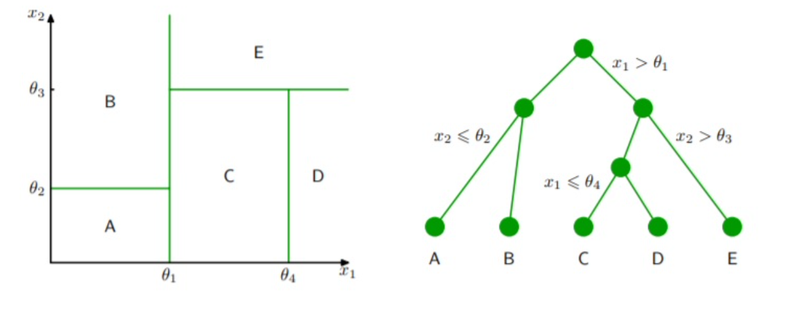

The XGBoost Boosting Algorithm and an Application to the Forest Cover Type Dataset
Matthias Quinn, Matthew Brigham
Fall 2021
Abstract
This project will focus on the famous XGBoost system and its application on a moderately large dataset. Starting with a history of the system, then exploring the algorithm itself, and finally ending with an application to forest cover types, this project will hopefully provide a framework on which to base further research and applications.
Introduction
Tree-based methods are popular due to their superior performance on tabular data. They work by repeatedly dividing the predictor space into regions in order to make predictions for both classification and regression problems. The most basic type of tree is the decision tree. The decision tree is simple to implement and to interpret. However, it usually doesn’t perform as well as other supervised methods in terms of accuracy. Bagging, boosting, and ensembling are all ways to improve the performance of decision trees.Boosting is a method of iteratively improving a model. One benefit of boosting is that both the bias and variance of the model is controlled, as opposed to just one. There are several popular algorithms for boosting: AdaBoost, Gradient Boosting, XGBoost, and others. One of the issues with most boosting algorithms is the computation time, which is why the XGBoost algorithm has gained so much traction over recent years.From Tianqi Chen and Carlos Guestrin in March of 2014, XGBoost has been a monumental system in the field of advanced analytics and machine learning. XGBoost was initially a research project started by Tianqi Chen - and later Carlos Guestrin - at the University of Washington, who presented their paper at SIGKDD Conference in 2016. Since then, version 1.5.0 is available for public usage and has been implemented in more than 5 languages including: C++, Python, R, Java, Scala, and Julia. In addition, the system is available to all modern operating systems, including: Windows, OS X, Linux, and a variety of cloud platforms.
Background
Decision Trees
Decision Trees are simple clustering algorithms that split the predictor space into distinct, non-overlapping regions.Trees are easy to visualize, are flexible since they make no assumption about the functional form, and can model highly non-linear relationships.They can also be used in the context of regression and classification.
Generally speaking, the algorithm works by searching through the available predictors and selecting the one that splits the leads to the greatest reduction in residual sums of squares (RSS), called recursive binary splitting.However, the model does not look beyond a single split to see if other predictors may lead to a greater overall reduction of RSS over the course of many splits.This is called a greedy algorithm. Considering the image below, we see that decision trees are a top-down approach, meaning that they start with the full predictor space then, moving down, create rules that split the space into distinct regions. The end result is a set divided predictor space of non-overlapping regions, as seen on the left. The splitting process continues until a criterion is met, whether it be a defined maximal depth, number of observations per leaf, or number of observations per split.

Tree pruning is a method that can improve the predictive accuracy of decision trees. Pruning refers to the reduction in depth of the tree. One concern about decision trees is over-fitting by modeling noise or being too complex. Utilizing a process known as cost complexity pruning, the optimal tree depth may be determined.This process considers the prediction error and the number of terminal nodes, as illustrated in the equation below.Cost complexity pruning aims to minimize this equation. The tuning parameter, \alpha, controls the complexity, or depth, of the tree. A large \alpha will result in a deep, complex tree (less pruning) and a small will result in a shallow tree (more pruning). In general, shallow trees cannot model all of the patterns in the data and will have higher prediction error at the cost of low complexity.Deep trees can model the patterns in the data at the cost of high complexity and potential over-fitting.There exists a happy medium between the two.
Classification requires small modifications to the fitting process compared to regression. Notably, instead of considering RSS, classification trees may consider either classification error, entropy, or the Gini Index.When the goal of modelling is prediction accuracy, it is generally advisable to minimize classification error for the splits. Classification error looks at the proportion of observations in each region belonging to a certain class and compares this to the most common classification of observations in that region. The equation below is used to calculate the classification error given region m and class k. CE = 1 - max(\hat{p}_{mk})
Entropy and the Gini Index are most commonly used for classification and are very similar in that they consider node purity. Node purity refers to the assortment of observations in a node. If all of the observations in a node have the same class label, then it is said to have high purity. If there are many different observation classes in a node, then it is not pure.High node purity is generally preferred. The equations for entropy and Gini Index are below.Just as regression trees aim to minimize RSS, classification trees aim to minimize entropy and Gini.
G = \Large \sum_{k=1}^{K} \hat{p}_{mk} (1 - \hat{p}_{mk})
E = \Large - \sum_{k=1}^{K} \hat{p}_{mk} log(\hat{p}_{mk})
Decision trees can be advantageous since they are easy to interpret and can model a variety of data types. However, they have some weaknesses. A primary weakness is that they can have a high degree of variance.Another weakness is that they are not robust in the sense that the addition/removal of a single observation may result in a very different tree shape.There are several ways to handle these concerns, commonly bagging, random forests, and boosting. We will discuss boosting, in particular.
Boosting
Boosting is a general ensemble algorithm that can be used to improve the predictive accuracy of decision trees. Boosting assumes a generic function then fits a shallow tree of the residuals. After incorporating the new tree to get an updated function, another shallow tree is fit to the updated function’s residuals.This process repeats until a criterion is met. Just like decision trees, the final resulting model is a single tree.
The boosting algorithm has three main steps:
Define an initial model to be fit to the data.
Iteratively fit B-many shallow trees to the residuals of the previous model and add them to the previous model
Fit a tree with d-many splits to the prior model’s residuals
Update the previous model by adding a shrunken version of the shallow tree.
Update the residuals by subtracting the shrunken version of the shallow tree
After B-many shallow trees have been fit to the residuals, the result is a single boosted model.
From the algorithm, we can see that the boosted model is a single tree that consists of a collection of weak learners (shallow trees). It is powerful because it can control for both bias and variance. Each addition of a weak learner aims to reduce the bias of the model. The collection of weak learners has the effect of reducing the variance of the model. Even though it controls for both, most of the focus is on bias reduction.If the initial function in the first step of the algorithm is \hat{f}_{x} , then the initial residuals are the y-values.When this is the case, the final boosted model will be the following equation, where \hat{f_{b}}(x) is the weak-learning decision tree from each iteration.
\Large \hat{f}(x) = \sum_{b=1}^{B} \lambda \hat{f_{b}}(x)
There are three tuning parameters for boosting: B, , and d. The parameter B represents the number of shallow trees that will be fit to the residuals. This value should be determined using cross-validation since a large value may result in over-fitting. The parameter B is closely tied to the shrinkage parameter . The parameter is called the shrinkage parameter and this controls the rate at which the model learns. A small lambda value confers a small adjustment to each sequential model. If the value of is extremely small, the model will need a large value for B in order for the data to be fit accurately. The parameter d defines the number of splits in each of the shallow trees. When we are referring to these sequentially added shallow trees, we mean that the value of d is small.
There are several algorithms for implementing boosting. Some example algorithms are AdaBoost, Gradient Boosting, and XGBoost (there are others). AdaBoost is commonly recognized as the first algorithm that successfully implemented the boosting algorithm. Gradient Boosting is a generalization of AdaBoost, and XGBoost is an optimized gradient boosting algorithm. One problem with boosting is that it can be very slow, especially for large datasets. This is part of the reason why XGBoost has become so popular.
XGBoost
There are many algorithms to implement boosting. The first boosting algorithm is recognized as AdaBoost and was mostly used for binary classification. Gradient Boosting is a generalization of AdaBoost and allows for the use of different loss functions. This improvement meant that it could be applied to regression and multi-class classification problems.One issue with Gradient Boosting, which is common among boosting in general, is that the learning process can be very slow.XGBoost is an improved implementation of the Gradient Boosting algorithm optimized for speed and accuracy.It is optimized for speed and has been observed to be more accurate in many cases, which is how it got its name: eXtreme Gradient Boosting. The success of XGBoost is attributed to several key algorithmic improvements:
Regularized learning objective
Novel tree-based algorithm for handling sparse data
Weighted quantile sketch for learning
Optimized computer hardware utilization
To implement a boosting algorithm, there is a chosen loss function (usually based on prediction error) that gets minimized. Gradient Boosting uses gradients to accomplish this. XGBoost improves upon this process by
XGBoost uses regularization of the loss function. Briefly, boosting works by iteratively adding weak learner shallow trees. This improvement helps to prevent over fitting by smoothing the solutions of terminal nodes in the shallow trees that are used for boosting.Regularization works by adding a penalty to a traditional loss function, usually based on errors or residuals. Common types of regularization are the l1 and l2 regularization.The loss function used by XGBoost is given below.The first term is a loss function that measures the difference between the predicted and actual values of y.The second term is the regularization term, or penalty, and uses both l1 and l2 regularization.The penalty works by reducing the complexity of the model.This rationale is analogous to cost complexity pruning in decision trees.There are alternative methods for regularization, but this method has been shown to be easier to implement for parallelization.Note that when the regularization term is set to zero, the loss function is identical to traditional gradient boosting.
\Large L = \sum_{i}l(y_{i'}, \hat{y_{i}}) + \sum_{k}(\gamma T + \frac {1}{2} \lambda ||w||^{2})
The second major improvement on boosting is the use of second-order derivatives in the optimization of the loss function.The use of second-derivatives yields more information about how to minimize the loss function faster.Usually for large datasets, it is not possible to explore all possible tree structures. Therefore, the use of the second derivative helps to pick which splits are optimal.The loss function cannot be optimized using traditional methods.The designers of XGBoost proposed an additive training strategy that necessitates the use of the second derivative for large datasets.
A third major feature is shrinkage and feature sub-sampling to prevent over-fitting.Shrinkage refers to the parameter used in the boosting algorithm described in the previous section. Feature sub-sampling is a technique that refers to the construction of the shallow trees during boosting.When these trees are constructed, at each split, only a fraction of the total features are considered.Random forests are known for employing this methodology as it decorrelates successive trees and allows for different patterns to be captured.
There are several splitting algorithms incorporated into the function that can be defined by the user.These splitting algorithms are listed below.
Exact Greedy Algorithm: This algorithm considers all of the possible splits for the features and picks a split based on the greatest reduction in the loss function.For continuous variables, the observations are sorted in ascending order then calculates split statistics (such as Sum of Squared Errors)between each observation.For n-many observations and m-many features, there are (n-1) possible splits per feature and m(n-1) possible splits. For large datasets, this is infeasible and requires the use of the approximate algorithm.
Approximate Algorithm: This algorithm improves upon the exact greedy algorithm and can work with large datasets.Instead of exploring all possible splits, the algorithm proposes split points based on quantiles and maps continuous features to these “bins”.Split statistics are calculated for the bins as a whole and then the split point is chosen based on which was best. The quantile strategy is distributable and recomputable, meaning it is faster.The designers also showed that this approximate quantile strategy can yield similar predictive performance as models that use the exact strategy. This quantile strategy is called weighted quantile sketch, and can be used for weighted data.
Sparsity-Aware Split Finding: Many datasets contain sparse data (such as missing data and zero-entries from one-hot encoding or other values). By incorporating a pattern recognition algorithm for sparse data, the model can run much faster for datasets with lots of sparse data.XGBoost assigns a default direction to each node when it is sparse.This “unified” approach allows for faster computation times.
The final improvement for XGBoost is the system optimization.Tree construction and sorting data (during the splitting algorithm) are the most computationally intensive and time consuming. Large datasets may not always be able to be modeled on a device. XGBoost was designed to be able to work efficiently on any device and in parallel with other devices in a distributed manner.To take the most advantage of a computer system, large datasets need to first be divided into blocks of data. XGBoost utilizes the following computational system improvements:
Column Block for Parallel Learning - To reduce the time of sorting, data is stored in blocks and only sorted once. The data is stored in a compressed column format.
Parallelization - The data blocks are distributed among the CPU cores. Therefore, collecting statistics from columns can be done using a parallel algorithm for finding splits.
Distributed Computing - Blocking the data allows for it to be distributed among different machines or disks. This allows the model to work on large datasets.
Cache Awareness - Storing gradient statistics in the cache of a CPU is computationally more efficient.
Blocks for Out-of-Core Computation - Dividing the data into blocks and using computer science techniques known as block compression and sharding allows for the model to work with very large datasets.
In summary, XGBoost is a gradient boosting algorithm that is designed for speed and scalability.It incorporates many different algorithms that the user can choose to use depending on their data structure.XGBoost is commonly used to take advantage of these design features and has been shown to perform just as well, oftentimes better, than other gradient boosting algorithms
Application: Forest Cover Type
Given forestry data from four wilderness areas in Roosevelt National Forest, classify the patches into one of 7 cover types, listed below:
1. Spruce/fir
Lodgepole Pine
Ponderosa Pine
Cottonwood/Willow
Aspen
Douglas/fir
Krummholz
Data Description
The forest cover type problem requires a prediction of the type of trees that are growing on a plot of land from a variety of descriptive features that affect which species are able to grow in those conditions.An effective model would be able to accurately predict the cover type, allowing researchers to make these predictions without using remotely sensed data.There are 12 predictor variables that can be used to predict the cover type.Table 1 below summarizes each of these predictors. Each observation in the dataset consists of measurements from these variables from a 30 meter by 30 meter plot of land in northern Colorado.There are 581,012 observations in this dataset.The dataset was released in 1998.
| Variable Name | Type | Measurement Unit | Description |
|---|---|---|---|
| Elevation | Quantitative | Meters | Elevation in Meters |
| Aspect | Quantitative | Azimuthal Angle | Aspect in Degrees Azimuth |
| Slope | Quantitative | Degrees | Slope in Degrees |
| Horizontal Distance to Hydrology | Quantitative | Meters | Horizontal distance to nearest surface water features |
| Vertical Distance to Hydrology | Quantitative | Meters | Vertical distance to nearest surface water features |
| Horizontal Distance to Roadways | Quantitative | Meters | Horizontal distance to nearest roadway |
| Hillshade 9 AM | Quantitative | 0-255 Index | Hillshade index at 9 AM, during summer solstice |
| Hillshade Noon | Quantitative | 0-255 Index | Hillshade index at noon, during summer solstice |
| Hillshade 3 PM | Quantitative | 0-255 Index | Hillshade index at 3 PM, during summer solstice |
| Horizontal Distance to Fire Points | Quantitative | Meters | Horizontal distance to nearest wildfire ignition points |
| Wilderness Area | Qualitative | 0 (absent), 1 (present) | Wilderness area designation |
| Soil Type | Qualitative | 0 (absent), 1 (present) | Soil type designation |
| Cover Type | Integer | 1 to 7 | Forest cover type designation |
The data was collected from four different wilderness areas (out of a total 6 wilderness areas) within the Roosevelt National Forest in Northern Colorado.The cover type was determined by the US Forest Service Region 2 Resource Information System data. A wilderness area is an area that is relatively untouched by humans; this means that any ecological processes are the result of nature rather than forest management services. The four wilderness areas studied in Roosevelt National Forest were Neota, Rawah, Comanche, and Cache la Poudre. These four areas differ in elevation and geography, even though they are nearby, resulting in different species of trees covering the land.Neota consists mostly of spruce/fir.Rawah and Comanche are mostly lodgepole pine, with a smattering of spruce/fir and aspen. Cache la Poudre consists mostly of Ponderosa Pine, Douglas/Fir, and Cottonwood/Willow. It should be noted that approximately 85% of the observations consist of two types of classes.There are no missing values.
Tables 1-2 and Figure 1 show some frequency distributions of the cover types and wilderness areas. From these, it can be seen that the dataset is dominated by the two cover types and two wilderness areas. This is attributable to the relative sizes of the wilderness areas. It is important to note the imbalance of observations as this may impact the bias of the model. The Rawah wilderness area is approximately 119.4 sq. miles; the Neota wilderness area is approximately 15.5 sq. miles; the Comanche wilderness area is approximately 104.4 sq. miles; the Cache la Poudre wilderness area is approximately 14.5 sq. miles. From Figure 1, there is a significant proportion of the total observations (approximately 20%) that are in the same soil type and cover type. Figure 2 displays a matrix of correlation values between all of the numeric variables. No significant conclusions regarding the relationship between variables can be concluded. Figure 3 shows that elevation does a great job distinguishing between the cover types. Other variables were explored, but there were no significant patterns identified.
| Class | Cover Type | Frequency | Relative Frequency |
|---|---|---|---|
| 1 | Spruce/fir | 211840 | 0.365 |
| 2 | Lodgepole Pine | 283301 | 0.488 |
| 3 | Ponderosa Pine | 35754 | 0.062 |
| 4 | Cottonwood/Willow | 2747 | 0.005 |
| 5 | Aspen | 9493 | 0.016 |
| 6 | Douglas/fir | 17367 | 0.03 |
| 7 | Krummholz | 20510 | 0.035 |
| Wilderness Area | Frequency |
|---|---|
| Rawah | 260796 |
| Neota | 29884 |
| Comanche Peak | 253364 |
| Cache la Poudre | 36968 |